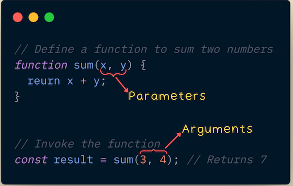
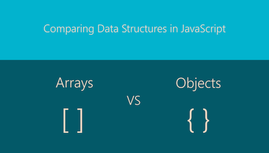
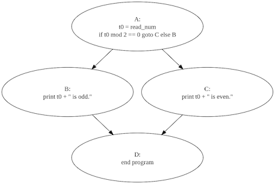
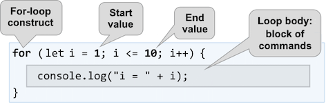
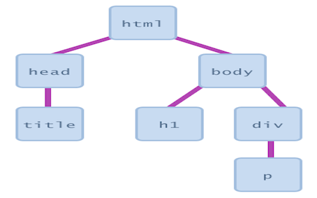

14 September 2025
Functions are reusable blocks of code created to perform a specific task. They allow the developer to write a task once and execute it multiple times. This help’s reduce repetition and keep their code organised. Functions also enable interactivity by allowing websites to respond to specific user actions or inputs. Developers set the parameters - the variable names listed in the function's definition. The user then responds with the argument - the real values passed to the function when it is called.

An array is a data structure that stores an ordered collection of elements. It provides a powerful way for developers to manage multiple related values within a single variable, think of viewing a list of fruit and selecting one fruit item from the list.
An object is a way to group related data together. Instead of just storing values in a list like an array, an object stores data in key value pairs. This means every piece of information has a name (the key), making the developers code much more descriptive and easier to understand.

Control flow statements determine the execution order of code. They introduce logic by evaluating conditions to decide which code blocks to run. For example in this case the if statement acts as a digital decision point: if (isRaining) { takeUmbrella } it's mimicking the human thought process of adapting to circumstances.

Loops automate repetitive tasks in a developers code. You use them whenever you need the same action performed multiple times. This is crucial for processing collections of data or running operations until a condition is met. An example is tracking progress towards a goal. The loop set is a counter of how many calories you've eaten and stops once you hit your daily goal of say 2000.

The Document Object Model (DOM) is a programming interface for web pages. It creates a structured or tree like representation of the HTML document, where each tag, attribute, and piece of text becomes a branch on that tree. Developers then use JavaScript to interact with the tree, this allows them to dynamically change the content, structure and style of a page without needing the browser to reload it.

Think of web development like being a music producer,
HTML is your sample pack and vocal - the raw audio files and core elements you have to work with.
CSS is you EQ, compressor, and reverb - it's how you shape those sounds, adjust the levels, and make everything blend together beautifully.
JavaScript is your MIDI controller and automation - its what lets you trigger samples live and create complex filter sweeps which completes the track.
You need all three to produce a track/website that moves.